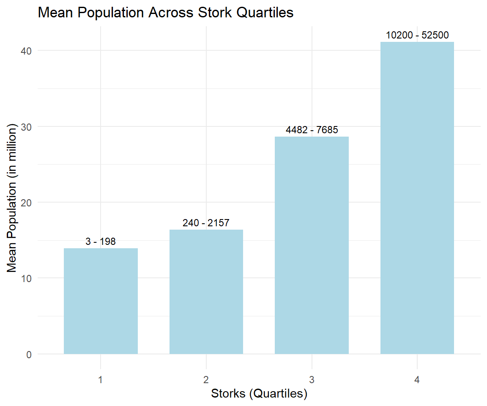

Chapter 9 Relationships
“[M]y ally is the Force, and a powerful ally it is. Life creates it, makes it grow. Its energy surrounds us, binds us. Luminous beings are we, not this crude matter. You must feel the Force flow around you. Here, between you, me, the tree, the rock, yes, even between the land and the ship.”
The most interesting research questions in social science are about relationships. What is a relationship? The way in which two or more things are connected. Things are variables. Everything that can be measured. How can the relation between the tree and the land be made palpable? Relationships are quantified via covariance or correlation. The relation between two (continuous) variables may be illustrated in a scatter plot.
9.1 Minimal Example
This is Sparta data.
x=c(4,13,19,25,29)
y=c(10,12,28,32,38)9.1.1 Variance
Definition
The variance is defined as the average quadratic deviation from the mean.
\[var(x) = \frac{1}{n-1} \sum (x_i - \overline{x} )^2\]
The variance of x is 98 and can be calculated via var() in R.
# Built-in command
var(x)
#> [1] 98The standard deviation is derived from variance and tells, on average, how far each value lies from the mean. It’s the square root of variance. Variance and standard deivation measure the variability of a variable.
Truly Dedicated
When you have collected data from every member of the population that you’re interested in, you can get an exact value for population variance. When you collect data from a sample, the sample variance is used to make estimates or inferences about the population variance.
9.1.2 Variation ARound the Mean
The one-dimensional variable x is visualized as points on a line. The mean of x is 18 (red bold line). The standard variation of x is 9.8994949 and surrounds the mean.

Truly Dedicated
In statistics, the empirical rule states that 99.7% of data occurs within three standard deviations of the mean within a normal distribution. To this end, 68% of the observed data will occur within the first standard deviation, 95% will take place in the second deviation, and 97.5% within the third standard deviation.
9.1.3 Scatterplot
The scatterplot is a two-dimensional instrument. It shows the original information from x and y and their respective means as bold red lines.

9.1.4 Covariance
Covariance is a measure of the joint variability of two variables. The main idea of covariance is to classify three types of relationships: positive, negative or no relationship. For each data point, we multiply the differences with the respective mean. When both values are smaller or greater than the mean, the result will be positive.
# Built-in command
cov(x,y)
#> [1] 117.59.1.5 Covariance Visualization
Now we turn to the visualization of the covariance. For each data point, we multiply the differences with the respective mean. This results in several rectangular areas starting at the intersection of means as a new origin. The covariance sums up all these areas.

Your Turn
From the graph, validate the covariance result from cov(x,y) by mental calculation?
9.1.6 Correlation
Covariance quantifies a relationship and is similar to correlation but when the covariance is calculated, the data are not standardized. Therefore, the covariance is expressed in units that vary with the data and is not converted to a standardized scale of 1 to +1. Because the data are not standardized, you cannot use the covariance statistic to assess the strength of a linear relationship (a covariance of 117 can be very low for one relationship and 0.23 very high for another relationship). To assess the strength of a relationship between two variables use a correlation coefficient.
Definition
The correlation coefficient is a statistical measure of the strength and direction of the relationship between two variables.
cor() is a basic function to calculate the correlation coefficient.
# Basic function
cor(x,y)
#> [1] 0.9564548cor.test() is a more sophisticated version including a hypothesis test.
# More advanced function
cor.test(x,y)
#>
#> Pearson's product-moment correlation
#>
#> data: x and y
#> t = 5.6757, df = 3, p-value = 0.01084
#> alternative hypothesis: true correlation is not equal to 0
#> 95 percent confidence interval:
#> 0.4751038 0.9972195
#> sample estimates:
#> cor
#> 0.9564548The correlation test is based on a t-value (t = 5.6757104) and returns a p-value (0.0108364) for statistical significance.
9.2 Application
Now, the time has come to apply your knowledge to real questionnaire data -- your data. Answers are anonymous, names and matriculation number have been removed. The data is provided on github.
library(readr)
GF <- read_csv("https://raw.githubusercontent.com/MarcoKuehne/seminars_in_applied_economics/main/Data/GF_2022_57.csv")
library(DT)
datatable(GF[,-8], options = list(pageLength = 5))9.2.2 Two Variable Graphics
The scatter plot shows the relation between age and semester (in base R). Add trend line is added to illustrate the general tendency.

9.2.3 Correlation and Regression
Truly Dedicated
What's the difference between correlation coefficient and simple regression coefficients?
linear_model <- lm(Total.Semesters~Age, data=GF)
linear_model$coefficients
#> (Intercept) Age
#> 1.8010913 0.2323192The regression coefficient of age is 0.2323192.
What is the Pearson correlation coefficient (between -1 and 1)?
GF_cor <- cor(GF$Age, GF$Total.Semesters, method="pearson")
GF_cor
#> [1] 0.1992823The correlation coefficient is 0.1992823.
Amazing Fact
The correlation coefficient and regression coefficient are related and only coincide when the two variables are on the same scale. The most common way of achieving this is through standardization.
\[\beta = cor(Y,X) \cdot \frac{SD(Y)}{SD(X)} \]
Please code the above formula for the given GF data and show the equivalence of the beta coefficient and the adjusted correlation coefficient. Access the regression coefficient of age from the linear model and store it as reg_coef_age. Store the adjusted correlation coefficient as adj_cor_coef.
Print out the logical comparison of reg_coef_age and adj_cor_coef.
If it returns FALSE, compare versions of reg_coef_age and adj_cor_coef that are rounded to 6 digits. Use round().